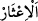

Kâşifî der ki: “Yemliha kâmil akıl sâhibiydi. Arkadaşlarının tavsiyelerini kabul etti
ve şehre doğru gitti. Şehrin kapısına ulaştı. Kapının durumunu değişmiş gördü. Şehre
girince pazarı, mahalleleri ve insanların şekillerini, renklerini farklı bir üslûb üzere
buldu. Onu hayret kapladı. Sonunda bir ekmekçi dükkanına gitti. Şehirden kaçarken
babalarının evlerinden alıp beraber götürdükleri paralardan ekmek almak için
ekmekçiye bir akçe verdi.
Ekmekçi altının Dakyanus adına basılmış olduğunu görünce Yemliha’nın hazîne
bulduğunu zannetti. Ekmekçi altını diğer çarşı esnafına gösterince bir anda bu haber
çarşıya yayıldı. Şehrin yöneticisine haber ulaştı ve derhal Yemliha’yı taleb etti ve ona
çok tehdidde bulundu. Altının geri kalanını istedi. Yemliha:
“Ben hazine bulmadım. Dün bu altını babamın evinden aldım ve bugün pazara
getirdim.” dedi. Babasının adını sordular, şehir halkından kimse onu bilemeyince ona
”yalan söylüyorsun” diye karşı çıktılar. Çok dehşete kapılan Yemliha:
“Beni Dakyanus’un önüne götürün, o benim durumumu bilir.” dedi. Adamlar:
“Dakyanus öleli üç yüz seneye yaklaştı. Sen bize hikâye anlatıyorsun.” dediler.
Yemliha:
“Siz benimle alay ediyorsunuz. Biz dün bir topluluk o Dakyanus’tan kaçtık ve dağa
gittik. Bugün yiyecek almak için beni gönderdiler. Ben bundan başkasını bilmiyorum.”
dedi.
Yemliha’yı kralın yanına götürdüler ve olup bitenleri haber verdi. Kral belde
eşrâfından ve kendi yakın çevresinden bir topluluk ile mağaraya doğru yöneldi.
Yemliha arkadaşlarına geri geldi ve durumu haber verdi. Melik hemen mağaraya ulaştı
ve mağaranın duvarında olan levhayı okudu. Onların isimleri ve halleri mâlûm oldu.
Kral mağaraya girdi ve onların yüzlerinin taze ve elbiselerinin yeni olduğunu gördü.
Şaşırdı ve hayrette kaldı. Kral onlara selâm verdi, onlar da selâmı aldılar. Cenâb-ı Hak
bu durumu haber vererek şöyle buyurur:”
“Böylece” yâni sonsuz kudretimizi ve apaçık bir hikmeti ortaya koymak, onların
basîret ve yakînini artırmak için onları önce uyutup sonra nasıl uyandırdıksa, işte öylece
bazı insanları “onlardan haberdar ettik” Yâni, Ashab-ı Kehf’in durumundan, bazı
insanları haberdâr ettik. “ el-İ’sâr”, bir şeyden habersiz olan ya da onun hakkında
bilgisi olmayan kişinin bir şeye bakıp da gerekli bilgiye sahip olmasıdır. Şu halde “el-
isâr” herhangi bir şeyi bilmenin sebebidir. Burada sebebin ismi, müsebbibe verilmiştir.
Tehzîbü’l-masâdır’da der ki: “el-İ’sâr” bir kimseye bir nesneyi ulaştırmak, haber
vermek demektir. Allah Teâlâ “Böylece (insanları) onlardan haberdar ettik”
buyurmuştur. “el-İttılâ‘ “ise bir kimseyi gizli olan bir şeye ulaştırmak, yetiştirmek
demektir.
“Ki,” onları bulan öldükten sonra diriltmeyi inkâr eden Tendrus kavmi “Allah’ın,”
ruh ve cesedin birlikte yeniden diriltme “vaadinin hak olduğunu” bunda bir hilâf
olmadığını bilsinler, anlasınlar. Çünkü Ashâb-ı Kehf’in 309 sene uyutulduktan sonra
yeniden uyandırılmaları tıpkı, öldükten sonra tekrar diriltme gibidir. Çünkü uyku